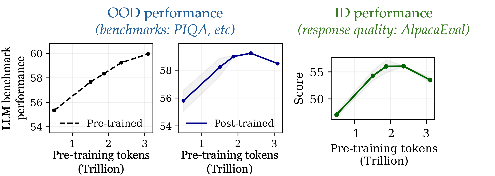
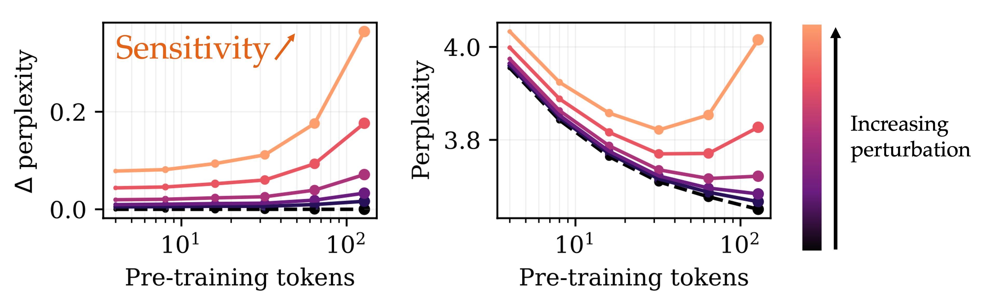
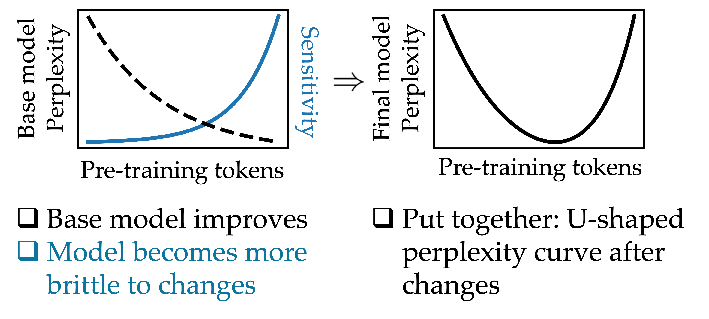
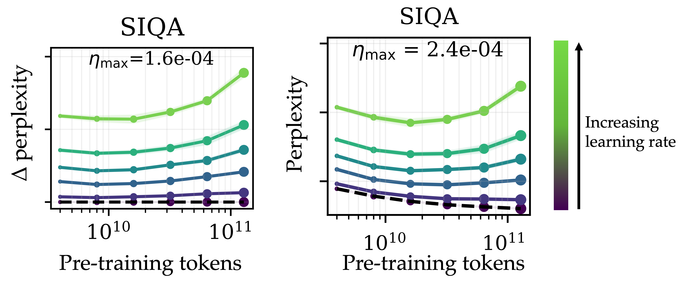
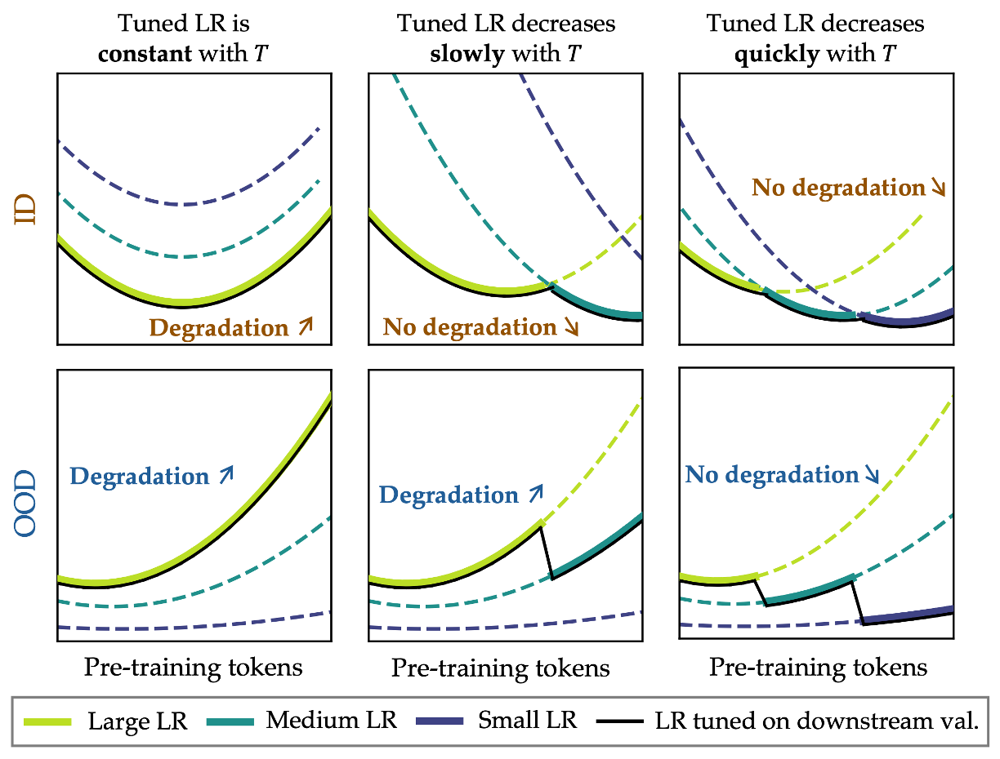

Don’t (Just) Train For Performance
Cross-posted from ar-forum.github.io/blog/dont-just-train-for-performance
You’ve probably seen confident claims on social media by prominent AI personalities that we already have the ingredients for AGI and simply need to scale. Proponents of this claim often point to one of many graphs illustrating the release date of a model plotted against some measure of performance, showing an exponential grown in capability over time. It’s true that today’s language models are impressively capable and can sometimes feel like magic in their seemingly effortless ability to converse.
However, a chatbox is not our only interface with LLMs. For a practitioner, it’s perhaps just as common to fine-tune language models to adapt them to new tasks. Does this feeling of “magic” carry over when we adapt the language models in practice? In this post, I will argue that the picture becomes messier. Let’s begin with an example.
Performance isn’t the whole story
Imagine a student, fresh out of their very first course on machine learning, who has a simple goal: fine-tune one of the many high-quality open-weight LMs to solve math word problems.
First version (vanilla): They adopt a simple and common setup. They train on 2,000 examples from the TinyGSM dataset, which contains examples of math word problems and associated Python programs that compute the solution. To fine-tune the model, they do everything their class taught them—construct a train/validation split, sweep over a few hyperparameters (here we will tune the learning rate), and then pick the best model based on validation loss. After training, they generate from each model and views the results.
Gemma-2B: Prompt
A restaurant is offering a 50% discount on all food items after 8 PM. If a customer orders a burger for $12 and fries for $5, what is the total bill after the discount?Generation (vanilla training)
def simple_math_problem() -> float:
"""
A restaurant is offering a 50% discount on all food items after 8 PM.
If a customer orders a burger for $12 and fries for $5, what is the total
bill after the discount?
"""
burger_price = 12.0
fries_price = 5.0
total_price = burger_price + fries_price
discount_rate = 0.50
discount_amount = total_price * discount_rate
final_price = total_price - discount_amount
return final_priceUnsurprisingly, it works perfectly. However, the model generates an unnecessary docstring (the text between triple-quotes) at the beginning of the function, wasting tokens just rehashing the prompt verbatim. To limit the number of generated tokens, they remove the docstrings and comments from the data before. To emphasize, in this version, there are no docstrings.
Second version (no docstring): After training with the same setup, the student generates from the model.
Gemma-2B: Prompt
Paul wants to buy ingredients for his grilled cheese sandwich. He needs 2 slices of bread that cost $2 each, 1 slice of cheese that costs $3, and some butter that cost $2. How much money does Paul need to buy the ingredients for the grilled cheese sandwich?Generation (no-docstring training)
def simple_math_problem() -> int:
'''
Paul wants to buy ingredients for his grilled cheese sandwich.
He needs 2 slices of bread that cost $2 each, 1 slice of cheese that costs $3, and some butter that costs $2.
How much money does Paul need to buy the ingredients for the grilled cheese sandwich?
'''
bread_cost = 2
cheese_cost = 3
butter_cost = 2
num_slices_of_bread = 2
num_slices_of_cheese = 1
total_cost = bread_cost * num_slices_of_bread + cheese_cost * num_slices_of_cheese + butter_cost
result = total_cost
return resultSurprise! For Gemma-2B, the docstrings continue appear, even though the fine-tuning data never included them! Of course, this is inevitably a result of Gemma-2B containing docstrings (perhaps in the exact format of TinyGSM) in its pre-training or mid-training data. But, this raises an important question: why isn’t a small format change easy to fine-tune?
It turns out, it is possible to fine-tune Gemma-2B to not include the docstrings, e.g., with an alternative non-standard model selection to explicitly select hyperparameters that lead to missing docstrings but do not minimize the validation loss (and to be fair, I didn’t try very hard). However if you’re worried about whether I thoroughly hyperparameter tuned, regularized appropriately, trained with enough data, or any other missing detail, you’re missing the point. With a relatively standard fine-tuning pipeline, fine-tuning should just work.
Adaptability as a first-class goal
The student’s struggle reflects a broad issue surrounding language models: adaptability. When we post-train or fine-tune, we generally want a model that is both:
- Plastic: Adapts easily and reach high downstream performance on the new task.
- Robust: Retains the broad capabilities learned during pre-training.
Together, these properties are what I will refer to as adaptability.
There’s plenty of evidence that larger models are both more plastic and more robust. It’s tempting to conclude that scaling grants adaptability “for free”. However, as we’ll see, this is not the case when we scale models without increasing their parameter count.
Case study: post-training OLMo-1B across its trajectory
Consider checkpoints along the OLMo-1B training trajectory, from early pre-training to the final 1.3T-token model. For each checkpoint, we track:
- The base model’s general capability, measured by an average score on standard LLM benchmarks.
- The post-trained model’s general capability after instruction tuning (robustness proxy).
- The post-trained model’s instruction-following quality (plasticity proxy).

Ideally, all three improve with more pre-training. In practice, early checkpoints improve on both instruction following and general capabilities, but beyond a point (≈2.3T tokens in our narrative) both decline, despite the base model’s pre-training loss still improving (Figure 2). We call this catastrophic overtraining.
Definition. Catastrophic overtraining is the phenomenon where extending pre-training continues to improve base-model loss but reduces the adaptability and robustness achievable via post-training.
Why does catastrophic overtraining happen?
To begin to address this question, we turn to a much simpler setting, where we update the model by adding Gaussian noise to the weights. Unsurprisingly, when adding Gaussian noise to the model, its performance—measured by the loss on web data—degrades. However, we can track by how much the performance (measured by loss on web data) degrades as a function of the number of tokens the model was pre-trained with. Note, this is tracking the robustness of the model to Gaussian perturbations of the weights over training.

For a fixed perturbation magnitude, the amount by which the perplexity of the model degrades increases progressively throughout training. In effect, the model becomes progressively more sensitive to perturbations to its weights as it is pre-trained for longer (Figure 1). We call this progressive sensitivity.
At the same time, the performance of the base model improves as we pre-train for longer—so what’s going on? As training progresses, the rate at which the base model improves slows down, while the rate at which the model’s sensitivity increases speeds up. This means that early in training, when sensitivity is still small, it has a negligible effect on the model, and the performance of the perturbed model improves with training. Later in training, however, the sensitivity of the model dominates the overall loss, leading to a degradation of performance with additional pre-training.

Crucially, this phenomenon depends on the fact that we kept the magnitude of the perturbation constant for all checkpoints. Smaller perturbations lead to a smaller degradation of the loss, and so if the size of the perturbation were to decrease at the same time as sensitivity increases, then the sensitivity term may never dominate the overall performance, and performance would increase indefinitely.
Translating this intuition to the fine-tuning setting
Our intuition—that the progressive increase in sensitivity eventually causes the performance of the perturbed model to degrade as sensitivity begins to dominate—nearly carries over to the fine-tuning setting, but we’re still missing one crucial piece of the puzzle. The perturbation to the weights from fine-tuning will not necessarily be the same magnitude for different pre-training checkpoints, and therefore we cannot conclude that the loss will necessarily eventually increase.
As it turns out, there is a setting where fine-tuning different checkpoints will yield a (relatively) consistent perturbation magnitude. In particular, this tends to occur when the fine-tuning hyperparameters—especially the peak fine-tuning learning rate—are set to a fixed (untuned) value for all pre-training checkpoints.

In this setting, where we don’t tune the hyperparameters for each checkpoint individually and instead use the same fine-tuning learning rate when post-training all checkpoints, we observe the exact trend we noticed when we perturbed the model with Gaussian noise.
Once again, the degradation induced by fine-tuning increases progressively throughout pre-training, leading to an overall “U”-shaped curve in the loss when evaluating the web-data perplexity of the post-trained model.
What happens when you tune the learning rate?
In practice, we would never pick a fixed set of hyperparameters. Rather, we would tune our hyperparameters on some downstream task to maximize the performance of the model. Since smaller learning rates lead to smaller fine-tuning perturbations, does this mean that catastrophic overtraining will disappear?
In fact, with our new intuition, we can now revisit our original question: for which datasets does catastrophic overtraining occur? It is exactly the training datasets where achieving strong downstream performance requires larger learning rates. For datasets where the tuned learning rate decreases sufficiently quickly as pre-training is extended, the increase in sensitivity is negated by the decrease in perturbation size. However, for datasets where the tuned learning rate remains sufficiently large, we observe degradation.

In total, we’ve established that overtraining can hurt the robustness and the adaptability of the model, and we’ve attributed this to a progressive increase in sensitivity to parameter perturbations that occurs as we pre-train the foundation model for longer. Thus, as long as the magnitude of the update from fine-tuning remains large enough not to cancel out the increase in sensitivity, we will observe catastrophic overtraining.
So, pre-train for more than just performance
For small (and overtrained) models, there’s a real trade-off between minimizing pre-training loss and preserving adaptability. If the only objective is a better validation loss on the base model, you can end up with a system that’s harder to adapt and less robust after post-training. This post is a call-to-action: we need pre-training methods to explicitly optimize for plasticity and robustness.
In short: don’t just train for performance—train for adaptability.
This post is based on our paper Overtrained Language Models Are Harder to Fine-Tune, which contains many of the details which have been omitted from the blog. For a more complete and formal discussion of this phenomenon, please read our paper :)
Thanks to Suhas Kotha, Ziqian Zhong, Gaurav Ghosal, and Aditi Raghunathan for feedback on drafts of this post.